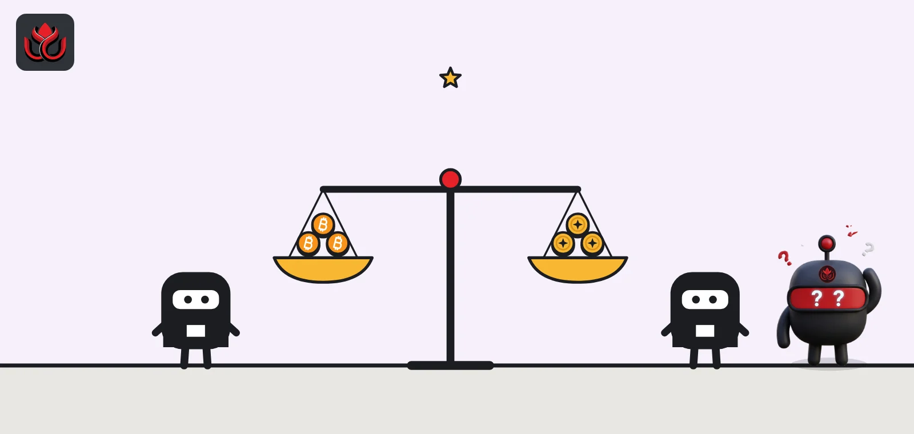
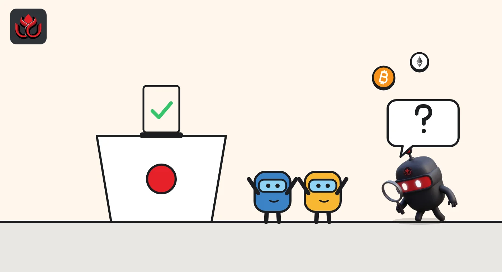

SEC vs. CFTC: who regulates crypto in the US, and where the line now falls
The SEC oversees crypto that counts as a security, and the CFTC oversees commodities like bitcoin and ether plus derivatives on them. Since March 2026, the two agencies share an interpretation that says most crypto assets are not securities.

Key points
- The SEC regulates securities, including tokens sold as investments and tokenized stocks. The CFTC regulates commodities and derivatives such as futures.
- A joint interpretation on March 17, 2026, says most crypto assets are not themselves securities, and the CFTC chair says it puts bitcoin and ether within CFTC authority.
- No law draws the line yet. The CLARITY Act would, but it stalled in the Senate in September 2026.
Who regulates crypto in the US?
There is no single crypto regulator in the United States. Two federal market regulators do most of the work, and they split it by what a product is:
- The Securities and Exchange Commission (SEC) oversees securities, such as stocks, bonds and investment contracts, and the firms that trade or hold them.
- The Commodity Futures Trading Commission (CFTC) oversees commodities and the derivatives markets built on them, such as futures and swaps.
Bank regulators and states also play a part. Stablecoin issuers, for example, fall under the GENIUS Act and bank regulators like the OCC. LC Insight explains that in our OCC rule story.
When is a crypto asset a security?
The key US test asks whether people are buying into an investment contract: putting money in and expecting profits from the work of others. For years, the SEC and the industry fought over which tokens met that test.
On March 17, 2026, the SEC issued an interpretation that sorts crypto into categories: digital commodities, digital collectibles, digital tools, stablecoins and digital securities, the SEC said. It explains how a non-security token can become tied to an investment contract and later stop being tied to one. It also covers how the law applies to airdrops, protocol mining, protocol staking and wrapping. Chairman Paul Atkins said "most crypto assets are not themselves securities."
The CFTC joined the interpretation and said it will administer its own law, the Commodity Exchange Act, consistent with it.
What does the SEC oversee in crypto?
The SEC keeps tokens that are securities, the tokenized versions of traditional securities, and the investment firms that hold crypto for clients. In 2026 it has used rule proposals and exemptions rather than lawsuits:
- Raising money: its August 18 proposal, Regulation Crypto Assets, would let projects raise up to $5 million over four years or up to $75 million every 12 months with tailored disclosure, plus a safe harbor once the issuer has finished its essential managerial work, the SEC said.
- Tokenized stocks: an "Innovation Exemption" in September for trading tokenized US stocks on approved on-chain venues, covered in our story.
- Custody: an October 1 proposal on how investment advisers and funds can hold crypto, covered here.
The Regulation Crypto Assets proposal also requires plain, principles-based narrative disclosure under both exemptions. Tokenization shows up in supervision too. The SEC's fiscal year 2027 examination priorities list tokenization among the high-risk areas examiners will check at clearing agencies and among the emerging trends under its technology rules for market infrastructure, the priorities document shows.
What does the CFTC oversee in crypto?
The CFTC treats a large set of crypto assets as commodities. CFTC Chairman Michael Selig wrote that the joint interpretation found "a swath of crypto assets, including bitcoin and ether, are non-securities" within his agency's authority, in an October 5 op-ed. That gives the CFTC derivatives markets on those assets, such as futures.
The spot market, where people buy and sell coins directly, is the gray zone. Selig wrote that FTX and other failed platforms ran US businesses on state money-transmitter licenses, laws he said were built for payment firms rather than markets. On October 5, the CFTC proposed rules, Regulation Crypto Asset Transactions and Regulation Crypto Asset Markets, under which CFTC-registered exchanges could offer retail customers margined or leveraged crypto trading. Selig said the rules would not force crypto to trade on CFTC platforms, because the agency cannot impose that without Congress.
The CFTC is also fighting states over prediction markets. On October 27, 2026, it said it had sued Utah to block state enforcement against CFTC-registered markets, its release says, a dispute we covered in our Utah story.

How is the SEC different from the CFTC?
The simplest way to remember it:
- SEC: investments that depend on someone else's efforts, tokenized securities, capital raising and investment advisers.
- CFTC: commodities like bitcoin and ether, derivatives on them, and, if its proposal is adopted, leveraged retail crypto trading on registered exchanges.
The line can move. A token sold as an investment can sit under the SEC's rules at launch and, under the March interpretation, stop being tied to an investment contract later.
What about stablecoins, banks and fraud cases?
Stablecoins mostly sit outside the SEC and CFTC fight. Under the GENIUS Act, bank regulators supervise issuers: the OCC oversees permitted and foreign issuers under its jurisdiction, it says, and the Federal Reserve oversees approved subsidiaries of state member banks and large state issuers that move into its framework, per a Fed staff memo on its proposed rule.
Both market regulators can still act against fraud. When FTX failed, the CFTC and the SEC both charged the firm and its founders, Selig noted in his op-ed. Overlap like that is likely to continue, because the same collapse can involve both investment contracts and commodity trading.
The two agencies are also working on how crypto-style trading fits traditional markets. The CFTC will hold a public roundtable on December 15 on whether derivatives markets can move to 24/7 trading, covering overnight trading, tokenization and operational readiness, it said. On the SEC side, the Regulation Crypto Assets proposal would also preempt state registration rules for qualifying offerings and require financial statements and ongoing reports for the larger $75 million exemption, per the SEC.
Will Congress settle the question?
The CLARITY Act would write the split into law and require the two agencies to coordinate. On September 15, 2026, a Senate vote to start debate failed 49 to 50, short of the 60 needed, the roll call shows. See our vote story for why.
Until a law passes, the division rests on agency interpretations and rules. Future commissioners could still revise them.
LC Insight analysis
This section is our reading of the facts above, not a statement of fact.
- We think the March 2026 joint interpretation did more than any lawsuit to settle the turf war. It moved the default for most tokens toward the CFTC and left the SEC focused on capital raising and tokenized securities.
- The weak point is durability. Interpretations and exemptions can be reversed by a future commission, which is why the industry still wants Congress to act.
What's next
- Final versions of the SEC's Regulation Crypto Assets and custody proposals
- The CFTC's leveraged retail trading rules after its comment period
- Court rulings in the CFTC's fights with states over prediction markets
Frequently asked questions
Is bitcoin regulated by the SEC or the CFTC?
Mostly the CFTC. Its chairman says the March 2026 joint interpretation treats bitcoin and ether as non-securities within the CFTC's authority. Spot trading is less settled: Selig notes that platforms such as FTX ran US businesses on state money-transmitter licenses.
Are stablecoins regulated by the SEC?
Payment stablecoin issuers fall under the GENIUS Act and bank regulators such as the OCC. The SEC's March 2026 interpretation lists stablecoins as their own category.
Can the CFTC regulate spot crypto exchanges?
Only partly. Its October 2026 proposal would let registered exchanges offer leveraged retail crypto trading, but its chairman says it cannot require spot trading on CFTC platforms without Congress.
Does the SEC still sue crypto firms?
The SEC still enforces securities laws, but in 2026 its crypto agenda has centered on interpretations, exemptions and rule proposals.
Disclaimer. This article is based on public information and the sources listed below as of the update time shown. It is for information only and is not investment, legal or tax advice. Figures may change as companies and authorities publish new data.
Sources
- SEC, Press Release 2026-30 on crypto assets interpretation (March 17, 2026)
- SEC, Press Release 2026-76 Regulation Crypto Assets (August 18, 2026)
- CFTC, Chairman Selig op-ed (October 5, 2026)
- CFTC, Press Release 9315-26 on Utah lawsuit (October 27, 2026)
- CFTC, Press Release 9318-26 on 24/7 trading roundtable (October 28, 2026)
- OCC, News Release 2026-92 on GENIUS Act final rule (October 21, 2026)
- SEC, Fiscal Year 2027 Examination Priorities